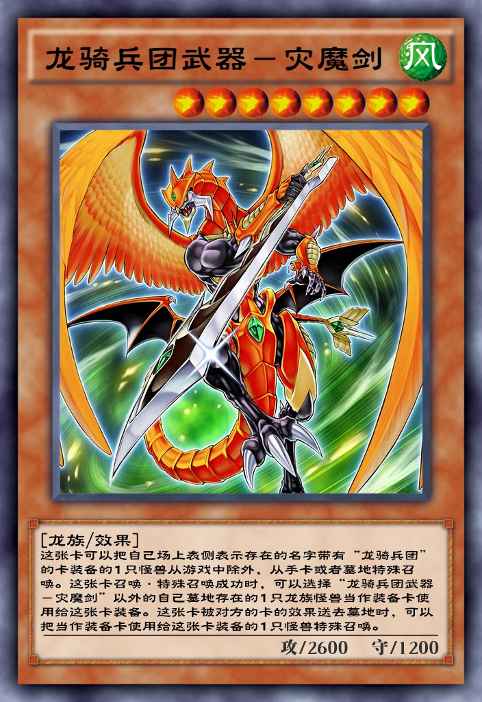

| 中文名 | 龙骑兵团武器-灾魔剑 |  |
| 日文名 | ドラグニティアームズ－レヴァテイン | |
| 英文名 | Dragunity Arma Leyvaten | |
| 卡片种类 | 怪兽 效果 | |
| 数据库编号 | 9046 | |
| 使用限制 | 无限制 | |
| 种族 | 龙 | |
| 属性 | 风 | |
| 星级 | 8 | |
| 攻击力 | 2600 | |
| 防御力 | 1200 | |
| 罕见度 | 超凡 | |
| 获取方式 | 超▪专家预组卡组 龙骑纪元 | |
| 字段 | ||
龙骑兵团 |
||
| 链接 | ||
百鸽 Yu-Gi-Oh! Wikia |
||
| 效果 | ||
这张卡可以把自己场上表侧表示存在的名字带有「龙骑兵团」的卡装备的1只怪兽从游戏中除外，从手卡或者墓地特殊召唤。这张卡召唤·特殊召唤成功时，可以选择「龙骑兵团武器-灾魔剑」以外的自己墓地存在的1只龙族怪兽当作装备卡使用给这张卡装备。这张卡被对方的卡的效果送去墓地时，可以把当作装备卡使用给这张卡装备的1只怪兽特殊召唤 |
||
| 调整 | ||
[龙骑兵团武器-灾魔剑] <ドラグニティアームズ－レヴァテイン> [2010/08/20] ●这张卡可以把自己场上表侧表示存在的名字带有「龙骑兵团」的卡所装备给的1只怪兽从游戏中除外，从手卡或者墓地特殊召唤。 ◇无种类效果（不进入连锁）。 ◇这张卡可以通常召唤。 ◇无论是否使用过上述方式对这张卡进行特殊召唤都可以使用其他卡的效果将这张卡特殊召唤。 ◇把自己场上表侧表示存在的名字带有「龙骑兵团/ドラグニティ」的卡所装备给的1只怪兽从游戏中除外是召唤手续。 ◇不能把场上的卡除外的场合，不能使用这个方式把这张卡特殊召唤。 【召唤方式】 【例1】 在自己的主要阶段，把自己场上表侧表示存在的，装备有「龙骑兵团-方阵龙/ドラグニティ－ファランクス」的「龙骑兵团-指挥官/ドラグニティ－ドゥクス」从游戏中除外，把这张卡从手卡或者墓地在自己场上表侧攻击表示或表侧守备表示特殊召唤。 【例2】 在自己的主要阶段，把自己场上表侧表示存在的，装备有「龙骑兵团-叉龙/ドラグニティ－ブランディストック」的「御用守护者/ゴヨウ·ガーディアン」从游戏中除外，把这张卡从手卡或者墓地在自己场上表侧攻击表示或表侧守备表示特殊召唤。 ●这张卡召唤·特殊召唤成功时，可以选择「龙骑兵团武器-灾魔剑」以外的自己墓地存在的1只龙族怪兽当作装备卡使用给这张卡装备。 ◇诱发效果（进入连锁）。 ◇任意发动。 ◇伤害步骤可以发动。 ◇取对象效果。 ◇可以将不能特殊召唤或未经正规特殊召唤方式的怪兽作为这个效果的对象。 【例】 「裁决之龙/裁きの龙」、未经过正规召唤方式「罪 青眼の白龙/Ｓｉｎ 青眼の白龙」 ●这张卡被对方的卡的效果送去墓地时，可以把当作装备卡使用给这张卡装备的1只怪兽特殊召唤。 ◇诱发效果（进入连锁）。 ◇任意发动。 ◇伤害步骤可以发动。 ◇取对象效果。 ◇效果发动时，选择墓地的一张送去墓地前当作装备卡使用给这张卡装备的1只怪兽发动。 【例1】 装备着未经过正规召唤方式的「罪 青眼の白龙/Ｓｉｎ 青眼の白龙」或「裁决之龙/裁きの龙」的这张卡被对方的卡的效果破坏送去墓地时，这个效果不能发动。 【例2】 装备着「青眼白龙/青眼の白龙」和「龙骑兵团-叉龙/ドラグニティ－ブランディストック」的这张卡被对方的卡的效果破坏送去墓地时， 这个效果发动时选择墓地的，在送去墓地之前当作装备卡使用给这张卡装备「青眼白龙/青眼の白龙」或「龙骑兵团-叉龙/ドラグニティ－ブランディストック」作为这个效果的对象。 ◇这张卡和这张卡的装备一起被送去墓地时（例：「裁决之龙/裁きの龙」），这个效果可以发动。 ◇因为「瞬着炸弹/瞬着ボマー」的效果，装备着「瞬着炸弹/瞬着ボマー」的这张卡因为「瞬着炸弹/瞬着ボマー」的效果破坏的场合，这个效果可以发动，并且可以将这个「瞬着炸弹/瞬着ボマー」在自己场上特殊召唤。 |
||
| 笔记 | ||
●这张卡可以把自己场上表侧表示存在的名字带有「龙骑兵团」的卡所装备给的1只怪兽从游戏中除外，从手卡或者墓地特殊召唤。
1. 装备的「龙骑兵团」卡无论在我方场上还是在对方场上, 都可以发动该效果。
2. 「命运英雄 血魔D」或者「纳祭魔」装备了「龙骑兵团」卡, 也能从游戏中除外, 发动该效果。
●这张卡被对方的卡的效果送去墓地时，可以把当作装备卡使用给这张卡装备的1只怪兽特殊召唤。
1. 必须要送去墓地才能发动，如果被除外了则不能发动。
2. 如果装备的是对方的卡也能发动，例子就是「瞬着炸弹」。
3. 以「龙骑兵团武器-小标枪龙」为对象发动了该效果，则「龙骑兵团武器-小标枪龙」并没有被送入墓地，无法发动效果。
|
||